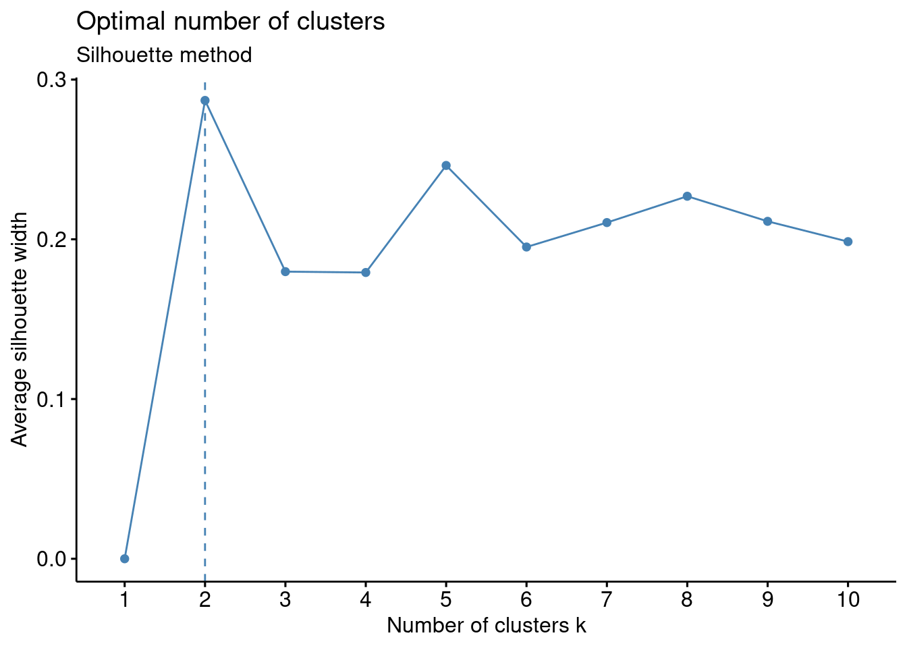
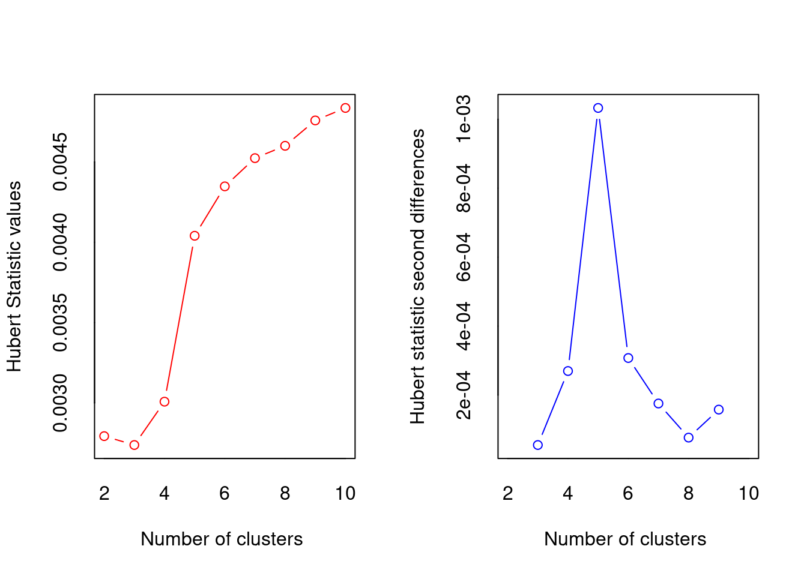
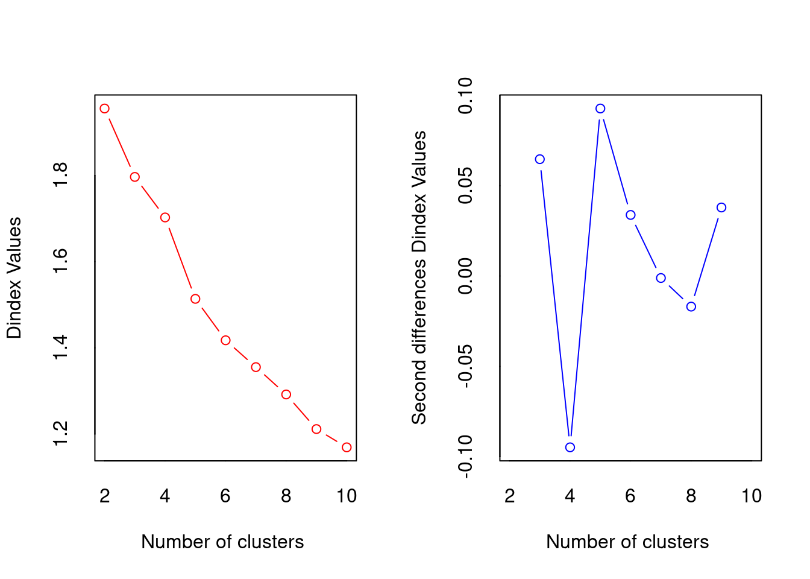

Code
library(knitr)
include_graphics("Figure 1.png")
Through the use of data mining technology, large amounts of complex financial data can be analyzed. K-means clustering (KMC) is an algorithm that can be used for potentially maximizing profit, or reducing risk, when investing in company stock (Soofi et al., 2015). Using KMC, stock data can be grouped together in accordance with predetermined criteria to find similarity, dissimilarity, and structure. KMC can also be used to classify financial features according to maximum and minimum similarity.Clustering algorithms, such as the k-means clustering (KMC) algorithm, have gained attention as valuable tools for aiding investment decision-making. However, there are some shortcomings to the method including the determination of the number of ‘k clusters’, different distance calculation methods, and the problem of local extremum (Fang et al., 2021).
What is k-means clustering(KMC)? It is a version of unsupervised machine learning. Unsupervised learning would utilize algorithms to analyze and cluster datasets that are unlabeled (Malik et al., 2019). In this case, K-means clustering would be considered an unsupervised learning method where similar data points will be assembled into groups of unlabeled data . It groups similar unlabled data by looking at the average distance between the objects in each group which is known as the centroid and the K groups. (Figure1?) below shows a visual representation of k-means Then you must measure the distance between each objects and centroid and assigned to the correct groups until all objects have a group (Yuan et al., 2019). In order to weigh variables one process that can be used is the ‘Analytic Hierarchal Process’. The stages of the KMC algorithm were as follows: 1. Initial stage that partitioned the objects randomly into ‘k’ clusters. 2. The repetition stage by calculating the center of each cluster using the mean of the data, compute the squared Euclidean distance from each object to each cluster, and compute the squared error function. 3. The improvement stage where objects were assigned to the cluster with the nearest center. 4. The stop stage which was a process that continued until no object move clusters or the objective function value doesn’t reduce (Soofi et al., 2015).
library(knitr)
include_graphics("Figure 1.png")
Source: (https://www.javatpoint.com/k-means-clustering-algorithm-in-machine-learning)
Using KMC it can help stock buyers or sellers understand the stock market pattern. K-means clustering when combined with regression method also helps with predicting stock future stock prices. This allows users to know when the best time to get in the market before a price increase/decrease, which in turn, tell sellers to hold or to sale their stocks (Bini et al., 2016). KMC is overall a great algorithm, but it also does have limitations. Some of those limitations include the determination of the number of ‘k clusters’, different distance calculation methods, and the problem of local extremum (Fang et al., 2021). Other types of limitations include the inability to use all types of data with KMC (Ahmed et al., 2020).
This paper provides the definition of KMC, some of the limitations of the methodology, as well as our analysis on how well KMC does handling stock data.
There are several methods involved when selecting the most optimal number of clusters. This paper we looked at the elbow, silhouette, as well as the gap statistic method in order to see which was the best method to use.
The first method, Elbow Method is Silhouette Method – Gap statistic method -
Distance Euclidean Distance -
\[ d_{euc}(x, y) = \sqrt{\sum_{i = 1}^{n}{(x_i - y_i)^2}} \]
# loading packages
library(readr)
library(tidyverse)
library(ggplot2)
library(cluster)
library(NbClust)
library(factoextra)
library("dplyr")
library(gridExtra)
# read csv file into R
df<-read_csv("SPDataset.csv")
#view the data headers
head(df)# A tibble: 6 × 16
SPComp…¹ SPCom…² Divid…³ Earni…⁴ CPI LongI…⁵ RealP…⁶ RealDiv RealT…⁷ RealE…⁸
<dbl> <dbl> <dbl> <dbl> <dbl> <dbl> <dbl> <dbl> <dbl> <dbl>
1 1480. 0.04 31.5 86.9 230. 1.91 1959. 41.7 1.06e6 115.
2 1512. 0.02 31.8 87.3 232. 1.98 1985. 41.8 1.07e6 115.
3 1551. 0.02 32.1 87.7 233. 1.96 2030. 42.0 1.10e6 115.
4 1571. 0.01 32.5 88.8 233. 1.76 2058. 42.6 1.12e6 116.
5 1640. 0.04 32.9 89.9 233. 1.93 2145. 43.0 1.17e6 118.
6 1619. -0.01 33.3 91.0 234. 2.3 2112. 43.4 1.15e6 119.
# … with 6 more variables: RealTRScaledEarnings <dbl>, CyclicallyAdjPE <dbl>,
# CAPETotal <dbl>, ExcessCAPEYield <dbl>, MonthlyBondTotalReturn <dbl>,
# RealTotalBondReturn <dbl>, and abbreviated variable names ¹SPCompIndex,
# ²SPCompIndexChange, ³Dividends, ⁴Earnings, ⁵LongInterestRate, ⁶RealPrice,
# ⁷RealTotalReturnPrice, ⁸RealEarnings# confirm the data is a dataframe
class(df)[1] "spec_tbl_df" "tbl_df" "tbl" "data.frame" # standardize the data having a standard normal with a mean of 0 and a standard deviation of 1
df<-scale(df)
#view the data
head(df) SPCompIndex SPCompIndexChange Dividends Earnings CPI
[1,] -1.459878 0.89659338 -1.825531 -1.0021306 -1.199982
[2,] -1.423825 0.33961870 -1.797611 -0.9905058 -1.101401
[3,] -1.380304 0.33961870 -1.768694 -0.9785829 -1.070106
[4,] -1.357854 0.06113137 -1.729805 -0.9463911 -1.082624
[5,] -1.279738 0.89659338 -1.691914 -0.9139013 -1.060717
[6,] -1.303543 -0.49584331 -1.653026 -0.8817095 -1.032030
LongInterestRate RealPrice RealDiv RealTotalReturnPrice RealEarnings
[1,] -0.3834200 -1.611206 -2.124297 -1.549531 -0.9736315
[2,] -0.2865240 -1.579612 -2.119514 -1.523009 -0.9877803
[3,] -0.3142086 -1.524564 -2.088424 -1.479025 -0.9801883
[4,] -0.5910543 -1.490318 -2.022658 -1.450376 -0.9270437
[5,] -0.3557354 -1.384746 -1.971241 -1.368563 -0.8852873
[6,] 0.1564291 -1.424442 -1.923411 -1.394873 -0.8462917
RealTRScaledEarnings CyclicallyAdjPE CAPETotal ExcessCAPEYield
[1,] -1.118256 -1.777435 -1.772915 1.9850727
[2,] -1.123574 -1.739449 -1.730230 1.9850727
[3,] -1.113088 -1.645752 -1.633002 1.9850727
[4,] -1.069427 -1.600169 -1.585575 1.9850727
[5,] -1.034060 -1.395047 -1.372149 1.9850727
[6,] -1.000427 -1.516601 -1.497833 0.7581182
MonthlyBondTotalReturn RealTotalBondReturn
[1,] -0.03853897 0.03913444
[2,] -0.03853897 -0.11482174
[3,] 1.14653432 -0.10519948
[4,] -0.63107561 0.14497931
[5,] -1.81614890 -0.04506035
[6,] -1.22361225 -0.44678975#estimate the optimal number of clusters according to the number of bends (elbow method)
fviz_nbclust(df, kmeans, method = "wss") +
geom_vline(xintercept = 4, linetype = 2)+
labs(subtitle = "Elbow method")
#estimate the optimal number of clusters Silhouette method
fviz_nbclust(df, kmeans, method = "silhouette")+
labs(subtitle = "Silhouette method")
#estimate the optimal number of clusters with the 'gap statistics' method
fviz_nbclust(df, kmeans, nstart = 25, method = "gap_stat", nboot = 50)+
labs(subtitle = "Gap statistic method")
#NbClust provides 30 indexes for determining the optimal number of clusters in a data set and offers the best clustering scheme from different results
nb <- NbClust(df, distance = "euclidean", min.nc = 2,
max.nc = 10, method = "kmeans")
*** : The Hubert index is a graphical method of determining the number of clusters.
In the plot of Hubert index, we seek a significant knee that corresponds to a
significant increase of the value of the measure i.e the significant peak in Hubert
index second differences plot.

*** : The D index is a graphical method of determining the number of clusters.
In the plot of D index, we seek a significant knee (the significant peak in Dindex
second differences plot) that corresponds to a significant increase of the value of
the measure.
*******************************************************************
* Among all indices:
* 7 proposed 2 as the best number of clusters
* 10 proposed 3 as the best number of clusters
* 1 proposed 5 as the best number of clusters
* 3 proposed 6 as the best number of clusters
* 1 proposed 9 as the best number of clusters
* 2 proposed 10 as the best number of clusters
***** Conclusion *****
* According to the majority rule, the best number of clusters is 3
******************************************************************* #test kmeans cluster for k=3, k=4 and k=5 for comparison
k3 <- kmeans(df, centers = 3, nstart = 25)
k4 <- kmeans(df, centers = 4, nstart = 25)
k5 <- kmeans(df, centers = 5, nstart = 25)
k6 <- kmeans(df, centers = 6, nstart = 25)
# plots to compare
p1 <- fviz_cluster(k3, geom = "point", data = df) + ggtitle("k = 3")
p2 <- fviz_cluster(k4, geom = "point", data = df) + ggtitle("k = 4")
p3 <- fviz_cluster(k5, geom = "point", data = df) + ggtitle("k = 5")
p4 <- fviz_cluster(k6, geom = "point", data = df) + ggtitle("k = 6")
grid.arrange(p1, p2, p3, p4, nrow = 2)
#Cluster analysis, k=3, nstart = 25 will generate 25 initial configurations
set.seed(123)
final3 <- kmeans(df, 3, nstart = 25)
final4 <- kmeans(df, 4, nstart = 25)
final5 <- kmeans(df, 5, nstart = 25)
final6 <- kmeans(df, 6, nstart = 25)
#view the kmeans clustering including: cluster, centers, total sum of squares, vector of within-cluster sum squares, total within-sum of squares, the between-cluster sum of squares, and number of points in each cluster
print(final3)K-means clustering with 3 clusters of sizes 50, 24, 49
Cluster means:
SPCompIndex SPCompIndexChange Dividends Earnings CPI
1 -0.9333842 0.04442213 -1.0235899 -0.7739683 -0.85251885
2 1.6142718 -0.21735597 1.2670619 1.7790438 1.73181689
3 0.1617691 0.06113137 0.4238778 -0.0816048 0.02168035
LongInterestRate RealPrice RealDiv RealTotalReturnPrice RealEarnings
1 0.05344247 -0.9522856 -1.0343740 -0.9619347 -0.74434395
2 0.41712542 1.4596534 0.8366700 1.4883478 1.67230664
3 -0.25883946 0.2567877 0.6456861 0.2525793 -0.05955432
RealTRScaledEarnings CyclicallyAdjPE CAPETotal ExcessCAPEYield
1 -0.826020457 -0.8987027 -0.8818402 0.6599619
2 1.710392755 1.0561806 1.0286878 -0.6222056
3 0.005134628 0.3997307 0.3959899 -0.3686767
MonthlyBondTotalReturn RealTotalBondReturn
1 0.04441616 -0.07195457
2 -0.35949632 -0.82847278
3 0.13075721 0.47920561
Clustering vector:
[1] 1 1 1 1 1 1 1 1 1 1 1 1 1 1 1 1 1 1 1 1 1 1 1 1 1 1 1 1 1 1 1 1 1 1 1 1 1
[38] 1 1 1 1 1 1 1 1 1 1 1 1 1 3 3 3 3 3 3 3 3 3 3 3 3 3 3 3 3 3 3 3 3 3 3 3 3
[75] 3 3 3 3 3 3 3 3 3 3 3 3 3 3 3 3 3 3 3 3 3 3 3 3 3 2 2 2 2 2 2 2 2 2 2 2 2
[112] 2 2 2 2 2 2 2 2 2 2 2 2
Within cluster sum of squares by cluster:
[1] 171.8075 241.3127 399.1667
(between_SS / total_SS = 58.4 %)
Available components:
[1] "cluster" "centers" "totss" "withinss" "tot.withinss"
[6] "betweenss" "size" "iter" "ifault" print(final4)K-means clustering with 4 clusters of sizes 22, 47, 31, 23
Cluster means:
SPCompIndex SPCompIndexChange Dividends Earnings CPI
1 0.5901033 0.20037504 0.8518846 -0.1094317 0.3114944
2 -0.9577231 0.01965453 -1.0639695 -0.7775808 -0.8714351
3 -0.1666278 0.04316444 0.0528906 -0.1035778 -0.2174557
4 1.6172250 -0.29000484 1.2880651 1.8332481 1.7758998
LongInterestRate RealPrice RealDiv RealTotalReturnPrice RealEarnings
1 -1.34986313 0.71174862 1.0927499 0.7195503 -0.200996856
2 0.03391012 -0.98083488 -1.0865416 -0.9906612 -0.743255366
3 0.55919488 -0.09151567 0.2486039 -0.1066793 -0.008825923
4 0.46818138 1.44685892 0.8400103 1.4799143 1.722979853
RealTRScaledEarnings CyclicallyAdjPE CAPETotal ExcessCAPEYield
1 -0.02330435 0.4587621 0.4736563 0.5350356
2 -0.83354999 -0.9443931 -0.9270843 0.7320128
3 -0.02315941 0.3522875 0.3384660 -1.0229448
4 1.75684726 1.0162086 0.9852209 -0.6288738
MonthlyBondTotalReturn RealTotalBondReturn
1 0.01532800 1.41107207
2 0.03710401 -0.06850181
3 0.20994414 -0.23680718
4 -0.37345098 -0.89056425
Clustering vector:
[1] 2 2 2 2 2 2 2 2 2 2 2 2 2 2 2 2 2 2 2 2 2 2 2 2 2 2 2 2 2 2 2 2 2 2 2 2 2
[38] 2 2 2 2 2 2 2 2 2 2 3 3 3 3 3 3 3 3 3 3 3 3 3 3 3 3 3 3 3 3 3 3 3 3 3 3 3
[75] 3 3 3 3 1 1 1 1 1 1 1 1 1 1 1 1 1 1 1 1 1 1 1 1 1 1 4 4 4 4 4 4 4 4 4 4 4
[112] 4 4 4 4 4 4 4 4 4 4 4 4
Within cluster sum of squares by cluster:
[1] 182.15696 157.49035 91.40494 227.08805
(between_SS / total_SS = 66.3 %)
Available components:
[1] "cluster" "centers" "totss" "withinss" "tot.withinss"
[6] "betweenss" "size" "iter" "ifault" print(final5)K-means clustering with 5 clusters of sizes 49, 34, 13, 15, 12
Cluster means:
SPCompIndex SPCompIndexChange Dividends Earnings CPI
1 -0.94222721 0.03839771 -1.0369549 -0.7762893 -0.8596065
2 -0.06224349 0.11027619 0.1870525 0.0136466 -0.1348314
3 1.81490779 0.06113137 0.9492070 1.5625966 1.1503079
4 0.55047727 -0.03169775 0.8843673 -0.3567647 0.3024440
5 1.36953766 -0.49584331 1.5704837 1.8843254 2.2678605
LongInterestRate RealPrice RealDiv RealTotalReturnPrice RealEarnings
1 0.04795076 -0.96255950 -1.0511755 -0.972135207 -0.7453411
2 0.39907616 0.01940593 0.3959144 0.005046811 0.1249760
3 -0.81359562 1.89936175 0.7413552 1.837806805 1.6474388
4 -1.67536654 0.66637182 1.1435184 0.687026496 -0.5340044
5 1.64908871 0.98486115 0.9380095 1.105512305 1.5721574
RealTRScaledEarnings CyclicallyAdjPE CAPETotal ExcessCAPEYield
1 -0.8295985 -0.91570580 -0.8986935430 0.6829986
2 0.1088989 0.37850499 0.3654535530 -0.9740528
3 1.6463531 2.00105452 2.0216779212 -0.4688363
4 -0.2955067 0.34013215 0.3550147772 1.0035091
5 1.6648145 0.07372694 0.0002940141 -0.7755749
MonthlyBondTotalReturn RealTotalBondReturn
1 0.04610912 -0.07093245
2 0.24030180 -0.09536496
3 -0.49433639 0.35167289
4 -0.11754385 1.72543571
5 -0.18667313 -1.97793206
Clustering vector:
[1] 1 1 1 1 1 1 1 1 1 1 1 1 1 1 1 1 1 1 1 1 1 1 1 1 1 1 1 1 1 1 1 1 1 1 1 1 1
[38] 1 1 1 1 1 1 1 1 1 1 1 1 2 2 2 2 2 2 2 2 2 2 2 2 2 2 2 2 2 2 2 2 2 2 2 2 2
[75] 2 2 2 2 2 4 2 4 2 2 2 4 4 4 4 4 4 4 4 4 4 4 4 4 3 3 3 3 3 3 3 3 3 3 3 3 3
[112] 5 5 5 5 5 5 5 5 5 5 5 5
Within cluster sum of squares by cluster:
[1] 166.92633 112.69451 49.45823 128.24424 59.81283
(between_SS / total_SS = 73.5 %)
Available components:
[1] "cluster" "centers" "totss" "withinss" "tot.withinss"
[6] "betweenss" "size" "iter" "ifault" print(final6)K-means clustering with 6 clusters of sizes 1, 12, 20, 47, 31, 12
Cluster means:
SPCompIndex SPCompIndexChange Dividends Earnings CPI
1 -0.1357296 -6.90105207 0.9704538 -0.1252024 0.2521279
2 1.3695377 -0.49584331 1.5704837 1.8843254 2.2678605
3 0.5785827 0.49278674 0.8493510 -0.1407320 0.2941420
4 -0.9577231 0.01965453 -1.0639695 -0.7775808 -0.8714351
5 -0.1666278 0.04316444 0.0528906 -0.1035778 -0.2174557
6 1.8590059 0.06113137 0.9636400 1.6737623 1.1957733
LongInterestRate RealPrice RealDiv RealTotalReturnPrice RealEarnings
1 -1.82301757 -0.18506987 1.2955376 -0.06389608 -0.202690955
2 1.64908871 0.98486115 0.9380095 1.10551231 1.572157421
3 -1.35584048 0.70448062 1.0992559 0.71058413 -0.236303133
4 0.03391012 -0.98083488 -1.0865416 -0.99066117 -0.743255366
5 0.55919488 -0.09151567 0.2486039 -0.10667932 -0.008825923
6 -0.81483787 1.93444570 0.7353305 1.87118330 1.772455863
RealTRScaledEarnings CyclicallyAdjPE CAPETotal ExcessCAPEYield
1 -0.03621498 -1.03798304 -1.0638682752 1.9850727
2 1.66481450 0.07372694 0.0002940141 -0.7755749
3 -0.05592099 0.45776069 0.4727939275 0.5127273
4 -0.83354999 -0.94439315 -0.9270843498 0.7320128
5 -0.02315941 0.35228752 0.3384660288 -1.0229448
6 1.75597101 2.03863423 2.0570815919 -0.4688363
MonthlyBondTotalReturn RealTotalBondReturn
1 1.14653432 1.88179746
2 -0.18667313 -1.97793206
3 -0.03853897 1.42810784
4 0.03710401 -0.06850181
5 0.20994414 -0.23680718
6 -0.53231950 0.32098651
Clustering vector:
[1] 4 4 4 4 4 4 4 4 4 4 4 4 4 4 4 4 4 4 4 4 4 4 4 4 4 4 4 4 4 4 4 4 4 4 4 4 4
[38] 4 4 4 4 4 4 4 4 4 4 5 5 5 5 5 5 5 5 5 5 5 5 5 5 5 5 5 5 5 5 5 5 5 5 5 5 5
[75] 5 5 5 5 3 3 3 3 3 3 3 3 1 3 3 3 3 3 3 3 3 3 3 3 3 6 6 6 6 6 6 6 6 6 6 6 6
[112] 2 2 2 2 2 2 2 2 2 2 2 2
Within cluster sum of squares by cluster:
[1] 0.00000 59.81283 106.55568 157.49035 91.40494 41.39991
(between_SS / total_SS = 76.6 %)
Available components:
[1] "cluster" "centers" "totss" "withinss" "tot.withinss"
[6] "betweenss" "size" "iter" "ifault" Ahmed, M., Seraj, R., & Islam, S. M. S. (2020). The k-means algorithm: A comprehensive survey and performance evaluation. Electronics, 9(8), 1295.
Babu, M. S., Geethanjali, N., & Satyanarayana, B. (2012). Clustering approach to stock market prediction. International Journal of Advanced Networking and Applications, 3(4), 1281.
Bini, B. S., & Mathew, T. (2016). Clustering and regression techniques for stock prediction. Procedia Technology, 24, 1248-1255.
Fang, & Chiao, C. (2021). Research on prediction and recommendation of financial stocks based on K-means clustering algorithm optimization. Journal of Computational Methods in Sciences and Engineering, 21(5), 1081–1089. https://doi.org/10.3233/JCM-204716
Malik, & Tuckfield, B. (2019). Applied unsupervised learning with R: Uncover hidden relationships and patterns with K-Means clustering, hierarchical clustering, and PCA (1st edition). Packt Publishing Ltd.
Ossareh, Pourjafar, M. S., & Kopczewski, T. (2021). Cognitive Biases on the Iran Stock Exchange: Unsupervised Learning Approach to Examining Feature Bundles in Investors’ Portfolios. Applied Sciences, 11(22), 10916–. https://doi.org/10.3390/app112210916
Soofi , Mohseni , M., & Momeni , M. (2015). Clustering Stock Market Companies via K- Means Algorithm. Kuwait Chapter of Arabian Journal of Business & Management Review, 4(5), 1–10. https://doi.org/10.12816/0018959
Yedla, M., Pathakota, S. R., & Srinivasa, T. M. (2010). Enhancing K-means clustering algorithm with improved initial center. International Journal of computer science and information technologies, 1(2), 121-125.
Yuan, C., & Yang, H. (2019). Research on K-value selection method of K-means clustering algorithm. J, 2(2), 226-235.
Zuhroh, Rofik, M., & Echchabi, A. (2021). Banking stock price movement and macroeconomic indicators: k-means clustering approach. Cogent Business & Management, 8(1), 1–10. https://doi.org/10.1080/23311975.2021.1980247